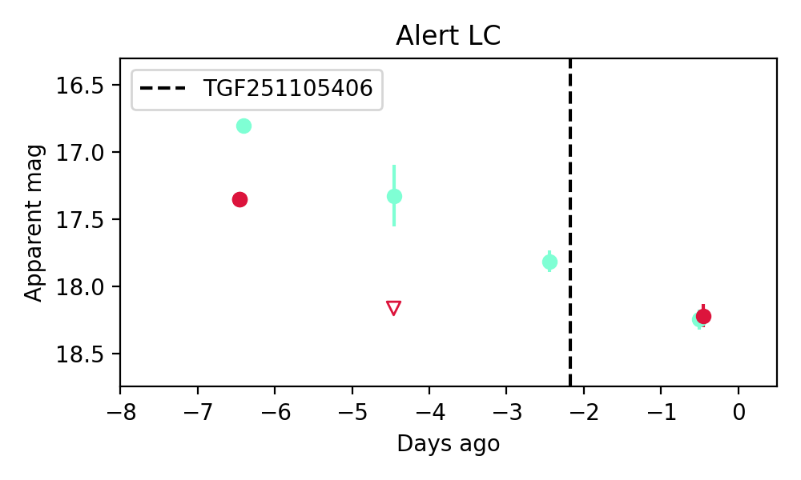
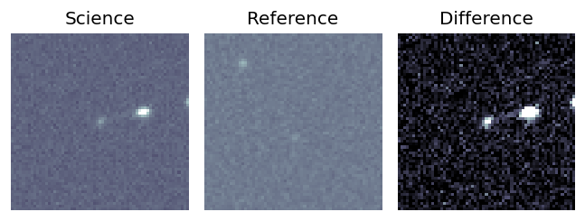
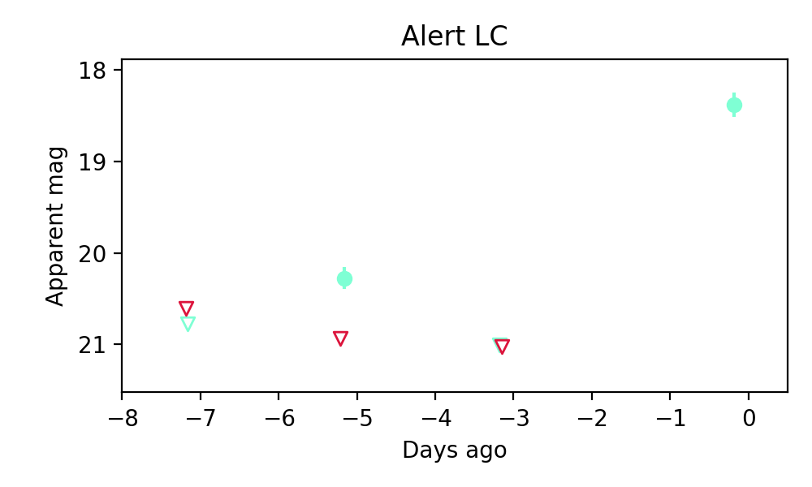

Candidate List 20251105Previous Day Next Day
Section 1: New Sources (age<1d) Section 2: Old (1-5d) sources observed last nightplaceholder
Section 2: Older Sources Observed Last Night (2)
0. ZTF25acbylrj (Afterglow?) [Back to Top] [Share] [Trigger Swift] [Fritz] [Lasair]RA, Dec: 282.61728, 26.62074 18h50m28.15s, 26d37m14.66sGalactic (l, b): 56.88043, 11.98653 ext(g-r) = 0.216

TESS: Sectors [ 26 53 54 74 80 81 119]
PS1: 0 sources in 3 arcsec
LegacySurvey: 0 sources in 3 arcsec

Extinction-corrected gr color:
From alerts: -1.05 +/- 99 mag
Rise Rate:
g: 1.59 mag/day
r: 1.32 mag/day
i: -99 mag/day
Fade Rate:
g: 0.26 mag/day
r: 0.4 mag/day
i: -99 mag/day
1. ZTF25accwgkr (Afterglow?) [Back to Top] [Share] [Trigger Swift] [Fritz] [Lasair]RA, Dec: 131.32331, 3.9056 8h45m17.59s, 3d54m20.15sGalactic (l, b): 223.02992, 27.01637 ext(g-r) = 0.043
TESS: Sectors [34 61 88]
SDSS (10 arcsec):Found SDSS phot-z: z=0.20; peak abs mag = -21.84
PS1: 0 sources in 3 arcsec
LegacySurvey: 1 sources in 3 arcsec Closest: d = 6.14 arcsec, 182.5 deg (east of north) photoz=0.12 (68% bounds 0.07, 0.2), type=SER peak abs mag = -20.43 (68% bounds -19.18, -21.6)

Extinction-corrected gr color:
From alerts: -0.7 +/- 99 mag
Rise Rate:
g: 0.88 mag/day
r: -99 mag/day
i: -99 mag/day
Fade Rate:
g: 0.37 mag/day
r: -99 mag/day
i: -99 mag/day